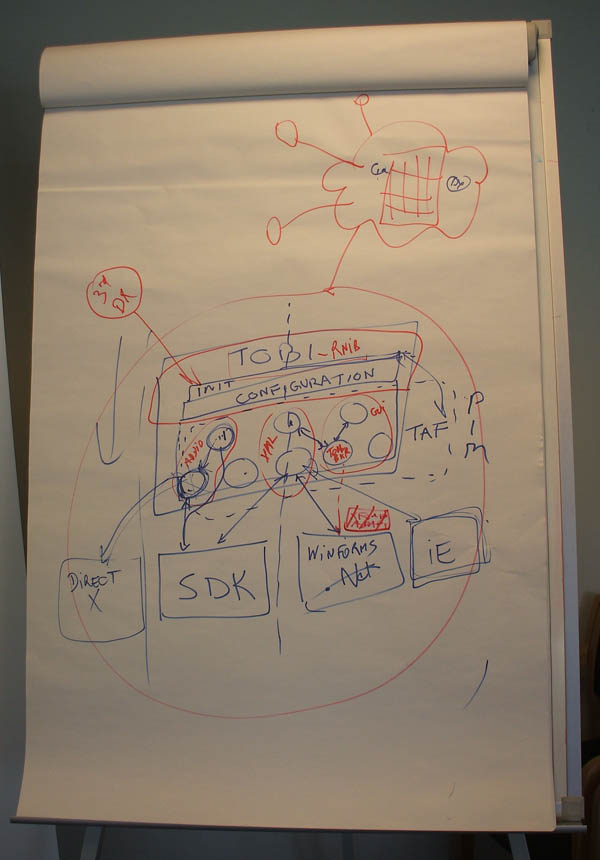

Inception Phase Meeting 2
Note: this is the first face-to-face meeting of the architecture task-force.
Dates
- 2008-03-11 (Tuesday)
- 2008-03-12 (Wednesday)
Venue
Kindly hosted by DBB, in Copenhagen (Denmark).
Participants
- Ole Holst Andersen (DAISY)
- Markus Gylling(DAISY)
- Daniel Weck (DFA)
- Stephen Hibberd (RNIB)
- Romain Deltour (DAISY)
Objectives
This 2-day session is a workshop, where participants interact in brainstorming mode.
The expected outcome is a draft specification of the main components of the application architecture for Tobi. The documentation produced will be available in this Wiki, in the usual inception bucket.
Some preliminary material is available in the list of requirements? established so far. This list is a good starting point to conceptualize the low-level technical details of the application, but we may also expect to inject back some new functional objectives into the initial list.
Agenda
DAY 1
- Markus to introduce the meeting's objectives and a reminder of his technical write-up? about componentization and plugin-style architecture (modularization and extensibility).
- Ole to talk about his role as the lead of this task force, and his C# experience of application frameworks.
- Romain to present a selection of features from the RCP framework that are worth implementing for Tobi, and a brief overview of the main component model (an interactive demonstration of Eclipse would be great here).
- Discussions and decisions about the Tobi architecture.
- To rationalize in a structured way, maybe we should use mind-mapping (e.g. FreeMind).
- Daniel can take notes and feed the Wiki in live mode. Daniel can also quickly produce graphical diagrams, if it helps.
DAY 2
- Continuation of day 1.
- Meeting deliverable: formal draft specification, decision on formats to use (diagrams, plain-text).
- Define the action plan for the next few weeks until the meeting at RNIB in April.
- Ole to take responsibility for the conference calls. Define date for next Skype interaction.
Minutes
Service-Oriented Architecture sits on top of the bundle mechanism.
Dynamic class loading is different in Java and C#.NET, but runtime loading of components is possible.
RCP based on OSGi stack, with XML configuration.
Plugin vision: GUI contributions as well as core extension points (added functionality).
Goal: hide UI toolkit details, provide developers with an API that relates to the business logic of the application, not to the implementation details.
Extension point can be new functionality (algorithms, UI edition views), or help file, or tutorial, or templates, or publisher resources (logos, copyright notices, etc.), etc.
2 separate concerns:
- base layer (OSGi-like): component model, (un)load "bundles", service registry, versioning and dependencies.
- RCP-like extension points: plugin into existing GUI views, adding new views,
Top-down approach: use-cases that encompass the various levels of pluggability.
Unsorted list:
- Human-interface devices: Input (additional methods to pointing-device(mouse/touch)/keyboard) / Output (giving feedback to user(s))
- Studio lights
- Remote control
- Voice Control
- Self-Voicing
- UI Views (available in the app, not necessarily loaded)
- Toolbar of actions (controls): always-on or on a per-view basis, configurable
- Navigation bar ("transport")
- VUMeter
- XML
- Text (edition or read-only)
- Tree structure, TOC (headings)
- Wave-form (editable or display-only)
- Media library (snippets, templates)
- Perspective (layout of loaded views)
- Narration only
- Screen-reader optimized
- Audio processing
- Phrase detection
- Noise reduction
- Annotation
- TTS
- Import / Export filters (support for distribution formats DAISY/SMIL)
Remark: a separate activity for GUI design (abstract widget layer on top of WinForms, XML configurability, etc.)
Dynamic class-loading: XUK factories with XML namespace <-> Class mapping is not suitable. We need to have a consistent mechanism in SDK 2.0 and in Tobi application framework, based on XML/Java/C# fully qualified names that uniquely represent a type, and its hierarchy of parent type(s).
Problem specific to SDK: degrade gracefully when a Class is unknown by the Factory: attempt to load the parent (super) Class and preserve as much data as possible (and recursively with ancestor types).
Problem specific to TAF (Tobi Application Framework): bundles (in the OSGi sense) expose dependency relationships (e.g. BundleA contains Class1 that is the parent of Class2 which is contained in BundleB).
XUK that contains extension (e.g. ns:TodoProperty) needs to provide URL to service provider [OPTIONAL] (e.g. http://rnib.org/urakawa-sdk/todo) as well as type hierarchy (e.g. ns:TodoProperty EXTENDS ns2:TextProperty EXTENDS xuk:Property) [OPTIONAL].
Lazy-loading of plugins (bundles) is primordial (see lifecycle Installed->Resolved->Loaded).
Tobi baseline configuration (full-text, full-audio), Tobi-RNIB configuration (baseline + e.g. Duxbury plugin + RNIB-branded welcome page + RNIB tutorial), and also several configurations per organization (e.g. DTBOOK narration vs Braille QA). This can be deployed via an intranet server (update site, configuration provider).
Use the following plugs/hooks between modules/components:
- Use APIs for hooking into a well-defined component (introduces tight-coupling)
- Urakawa SDK (maybe with an intermediary facade interface to simplify acess)
- Audio processing (e.g. phrase/silence/gaps/tone detection, based on specific threshold / noise reduction)
- Use services when loose-coupling is required
- Plugins/Addins (standalone or as contributions to extension points defined for existing components)
- e.g. SVG/MathML/etc support, TTS, Spell-checking, XML/Structure inline validation (error highlighting, correction proposition, etc.)
- Use RCP style xml extension points for UI hooks
- For Tobi-defined GUI components (reusable by plugins, simplification of the WinForms API and tight integration in the application framework)
The bullet points are not exclusive. For example, an multimedia annotation feature (audio, text, image, etc. notes for a cursor location in the document, or a selected (non)contiguous range) could be implemented with (2) and (3).
Note: VUMeter access raw data from audio hardware/engine, not streams from SDK data model (as opposed to WaveForm display which is a visual representation of the data model).
using org.daisy.tobi.ApplicationLauncher;
final static void main(args ...) {
ApplicationLauncher.LoadConfiguration(path);
}
List of plugins:
- GUI
- Layout/Perspective "Manager" (role: aggregate UI components based on XML config.)
- Main Window
- Menu Bar
- ToolBar
- Title Bar display (text)
- Status Bar
- Boot splash screen
- About box (copyright, license and organization-specific logo/information)
- Preferences configuration panel
- Preferences storage mechanism
- Plugin reporting console
- Welcome screen
- Urakawa SDK
- App. Preferences
- Views
- Audio WaveForm
- Text (edit and/or read-only)
- Structure/TOC/Headings
- VUMeter / Peak Program meter
- Audio Transport bar
- Audio Services
- Playback engine
- Recording engine
- Time Scale Modification playback filter
- Phrase Detection
- Noise Reduction
- Human-interface devices
- driver for remote control
- driver for studio lights controller
- Message service (status/state information, progress reports, OK/YES/NO/CANCEL prompts, etc.)
- Logging service (developer-oriented, file and/or console -based)
- Contextual Help
- Import / Export filters (conversion between arbitrary formats and SDK data model)
- Application/package/feature discovery/update/add
- data model verification (error, warning, etc.)
- spell-checking
- XML grammar-based validation (inline, at authoring time)
- audio verification (clipping, silence, etc.)
- Dictionary utility (good for sample plugin)
- Localization (l10n)
Tobi Über Architecture Diagram

Action Items
- #14 Create a minimal OSGi profile for Tobi (Romain)
- #15 Research the System.AddIn? namespace in .Net Framework 3.5 (Stephen)
- #16 Create list of Native Tobi plugins (Ole)
- #17 Clean meeting minutes (Daniel)